附魔师
附魔师
请仔细阅读此部分，这一部分非常重要。
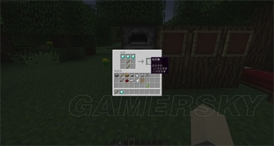
首先，我们需要钻石镐。当然，你挖到的前3颗钻石我大力推荐做成钻石镐，因为它的挖掘速度，耐久都十分出色
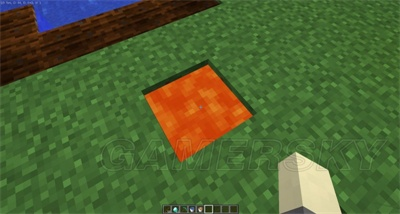
这就是以前挖矿说过的岩浆，碰到了就燃烧，疯狂减血，跳进去的话你都不知道自己怎么死的
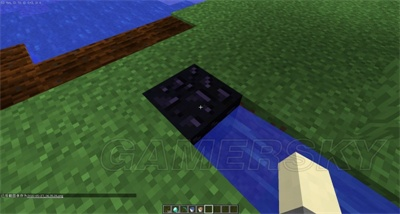
如果岩浆的源头（注意是源头）被水碰到，会变为最坚硬的黑曜石（别跟我提基岩）
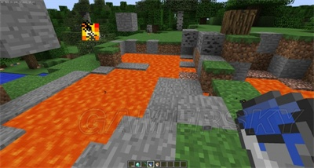
也许你挖矿/在地面探索的时候会发现岩浆湖，那么也许你会问：我不可能把水一格格的倒吧！放心，有一种很简单的方法
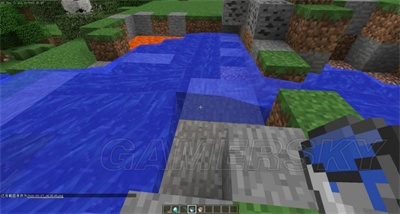
对住岩浆湖的边缘的一个方块放水，然后岩浆都变成黑曜石了
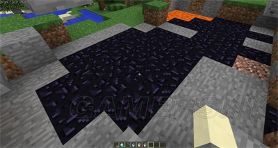
DUANGDUANGDUANG
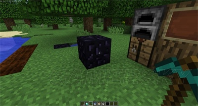
黑曜石太坚硬了，必须用钻石镐挖掘，而且挖掘时间破天荒的高
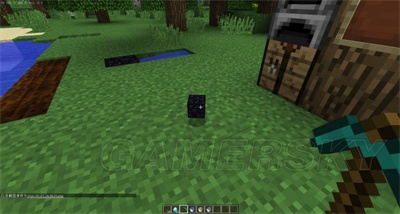
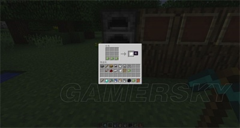
黑曜石可以制作附魔台，而附魔台的合成需要书。书当然要用纸造了
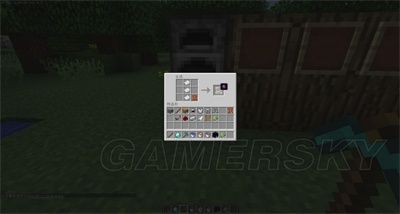
皮革可以通过杀死哞菇，牛，马等生物获得
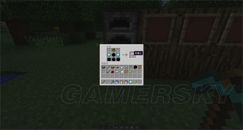
这样合成附魔台
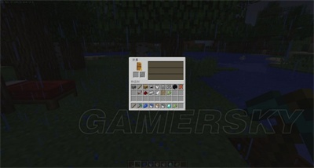
拿着附魔台，对着一个方块右键把附魔台放到地上，对准附魔台右键有这么一个界面
附魔需要一个能附魔的工具/武器/装备，和青金石（1.8以下不需要青金石），还有若干经验
经验一般可以通过杀死动物/怪物获得
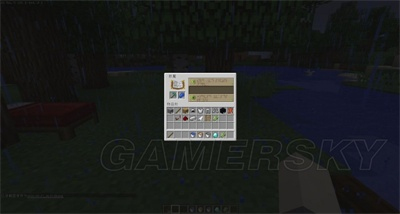
把钻石镐和青金石放上去，会发现这样了
选择一个，点击。消耗相应的青金石与经验
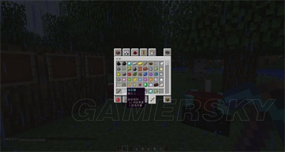
你会发现被附魔的武器闪闪发光，名字变为蓝色
书架的放置
要想附魔等级到达最大, 通常你的等级要到达30级, 并且附魔台附近要有15个以上的书架
附魔等级由附近书架的数量（最多15个）及附魔等级在附魔列表中所在的行数决定。
附魔台附近的书架可以提高可用的附魔等级。在预览版12w22a中，若附魔台周围没有书架，则可用附魔等级最高只会到8级。v
有效的书架必须距离附魔台2个方块远，且必须与附魔台处于同一或高1个方块的高度。
书架和附魔台之间的空间必须是空气（火把与雪也不允许）
如下图所示:
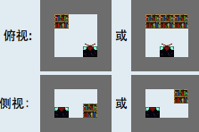
由于只需要15个书架即可达到最大附魔等级，所以书架的排列有很多种方法。
一种最简单的方法是用一层书架围着附魔台绕上一圈：
另外一种方法则是做一个“图书角”。这种方法使用了16个书架，比需要的还要多。
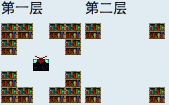
另外一个“图书角”，书架放两层。这种方法使用了16个书架，比需要的还要多。

如果需要限制最大附魔等级，一种简单的方法就是往附魔台与书架之间的空间中插火把禁用部分书架。把火把拿下可以重新恢复最大的附魔等级。
另外要注意的是，要检查附魔区域的环境，并保证书架与附魔台之间的绝对空隙。例如在覆雪生物群系中，雪可以把所有书架都无效化。因此，除非你希望得到较小的附魔等级，则在附魔前要进行仔细的检查和清理。
先简单介绍一下附魔属性：
保护——————可以减少你受到的所有伤害。等级上限四
火焰保护————可以减少你被燃烧与岩浆的伤害。（火焰保护与火焰抗性是两回事）等级上限四
摔落保护————可以减少摔落的伤害。（末影珍珠的效果也算摔落）等级上限四
爆炸保护————可以减少爆炸对你造成的伤害。等级上限四
弹射物保护———可以减少箭对你造成的伤害。等级上限四
水下呼吸————可以让你的气泡减少的更慢。（水下呼吸二几乎就可以想干嘛就干嘛了）等级上限三
水下倔速————相当于效率属性，但是只在水下生效。（在水下作业会减少效率）等级上限一
荆棘——————反弹其他生物给你造成的伤害。（你一样会受到伤害）等级上限三
耐久——————减少任何工具装备武器的磨损，并不是增加耐久，打个比方以前用一次会降低一耐久，有了耐久附魔后用一次会有三分之一的几率减少一耐久。等级上限三
保护、火焰保护、爆炸保护三个属性每件装备上只能有一个，不会存在两个。而且一套装备出现两个保护属性，只计算最高的那件 除耐久外其他以上属性同理。
所以说每个属性都有一个就可以算神装了，至于如何搭配可以看下面的属性出现位置。
锋利——————伤害计算时附加额外伤害。
亡灵杀手————可以对僵尸、骷髅、猪人、凋零骷髅、凋零造成额外伤害。
截肢杀手————会对蜘蛛、洞穴蜘蛛、蠢虫、是啊，不会对库里啪造成额外伤害的说。
击退——————判断伤害时会将生物击退一定距离
抢夺——————生物有几率额外掉落，等级越高掉落上限越高、额外多掉落的几率越高。
火焰附加————会让受到伤害判断的生物燃烧，等级越高时间越长。
耐久——————减少任何工具装备武器的磨损
剑的附魔冷知识前三个额外伤害是等级越高附加的额外伤害上限越高，这样被平均的出现低伤害的几率会变少。
其实本人一直不喜欢击退这个属性因为击退会让你很难连续攻击怪物，在原版来说没有什么威胁性大到让你用击退耗血的生物。也会干扰你收集掉落物与经验，因为尸体会飞的很远很远，很远很远， 对了pvp可以用，不过要把握好后退的先手攻击，详细上面那个连接里面有跟打凋零骷髅意思一样，但是要把握攻击时机。
抢夺跟伤害附加原理差不多。
火焰附加，只要是剑打死的或者烧死的就会出现熟肉，就是说即使你在雨天或者水下杀生物都会是烧死判定，但是如果让他自己慢慢烧死不会有抢夺属性附加，所以用抢夺+火焰的剑杀生物时要考虑如何让生物死在剑下而不是烧死，可以是上面说的雨天也可以连续攻击。
效率——————使附魔的工具加速采掘。
精准采集————会让采集的物品以原本的状态掉落。
时运——————让采集后掉落材料而非方块的物品有几率额外掉落。
耐久——————减少任何工具装备武器的磨损
诱饵——————可以增加钓鱼的几率。
海之眷顾————可以增加掉到宝物的几率。
以下是有意义的附魔
效率————可以让工具加速采集，但是不是专用工具则没这个属性，比如说用稿子挖泥土。
时运————会影响掉落的分别是钻石（这个必须开头- -）、绿宝石、红石、青金石、煤、燧石、萤石粉、石英、粘土、树苗、西瓜、萝卜、土豆、小麦、种子、地狱疣。
精准采集————会影响的有石头、草方块、菌丝、沙砾、灰化土、菌丝、煤矿石、红石矿石、钻石矿石、绿宝石矿石、石英矿石、粘土块、书架、蘑菇块、西瓜、冰、树叶、蛋糕、蜘蛛丝（附魔剪子）、各种草花藤蔓等。
诱饵跟海之眷顾————给你们分类一下1.7.2版本的钓竿能钓上来的东西就明白了
宝物：附魔的钓鱼竿、附魔书、附魔弓、马鞍、绊线钩、命名牌。
鱼类：鱼、鲑鱼、小丑鱼、河豚。
垃圾：损坏的钓鱼竿、睡莲、靴子、腐肉、木棍、骨头、碗、线、皮革、水瓶。
另外打火石等工具也是可以附魔耐久等属性的。
还剩一个弓- –
力量——————伤害判断时附加伤害。
冲击——————伤害判断时击退目标生物。
火矢——————箭附加火焰特效，有照明效果，伤害判断时附加火焰效果。
无限——————使用弓时不消耗箭（背包里面要有箭在可以拉弓，这也就是不消耗而不是不需要的意思）。
耐久——————减少任何工具装备武器的磨损
简单说一下技巧把 – – 附魔属性就不介绍了。大家应该一直不明白为什么我一直说的是伤害判定时， 而不是击中之类。因为mc的伤害计算是怪物受到攻击后你手里面拿的什么就根据什么来计算伤害。所以你可以射出一只箭后换成剑，现在的版本没测试过，以前有用，最明显的是范围瞬间伤害药水。